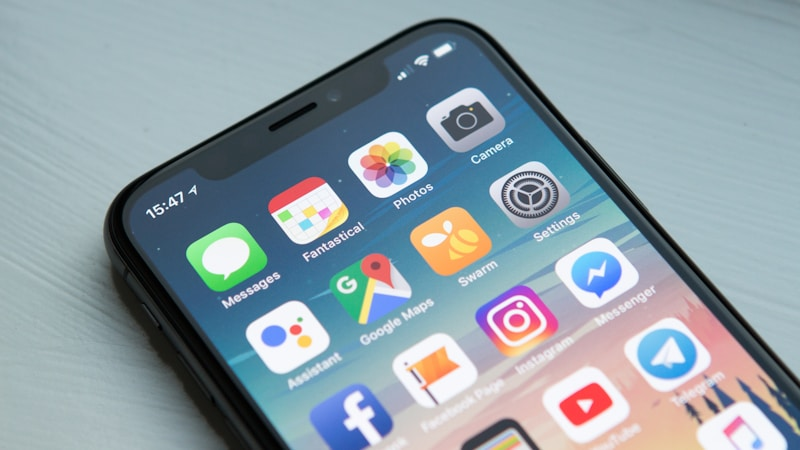
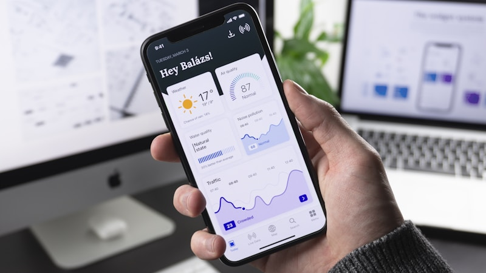

App Mobile
App native e cross-platform ad alte prestazioni
Il mondo è mobile-first: la tua azienda lo è?
Oltre il 70% del traffico web globale proviene da dispositivi mobili. I tuoi clienti controllano lo smartphone in media 150 volte al giorno: cercano informazioni, confrontano prodotti, effettuano acquisti, prenotano servizi. Un’applicazione mobile ben progettata non è un lusso - è il canale più diretto e personale per raggiungere il tuo pubblico.
In NovaTechHub progettiamo e sviluppiamo applicazioni mobile per iOS e Android che mettono l’utente al centro di ogni decisione. Che si tratti di un’app consumer rivolta a milioni di utenti, di un tool B2B per il tuo team commerciale o di un sistema interno per ottimizzare i processi aziendali, il nostro obiettivo è creare esperienze fluide, veloci e intuitive che le persone vogliano davvero utilizzare ogni giorno.
Non costruiamo app per il gusto di averle sugli store. Ogni progetto parte da una domanda precisa: quale problema risolve questa app per i tuoi utenti? Solo quando la risposta è chiara iniziamo a progettare.
Nativa o cross-platform?
Una delle prime decisioni strategiche nello sviluppo di un’app è la scelta dell’approccio tecnologico. Non esiste una risposta universale: la scelta dipende dal tipo di progetto, dal budget, dai tempi e dalle funzionalità richieste. Ecco come la affrontiamo.
Sviluppo nativo (Swift per iOS, Kotlin per Android)
Lo sviluppo nativo significa costruire due app separate, ciascuna scritta nel linguaggio ufficiale della piattaforma. È l’approccio che garantisce le migliori performance e il pieno accesso a tutte le API del sistema operativo.
Quando lo consigliamo:
- App con animazioni complesse, grafica 3D o elaborazione intensiva (es. realtà aumentata, editing video)
- Progetti che richiedono integrazione profonda con hardware specifico (Bluetooth LE, NFC avanzato, sensori biometrici)
- App di grandi dimensioni con milioni di utenti dove ogni millisecondo di performance conta
- Quando l’esperienza utente deve essere indistinguibile da un’app di sistema
Considerazioni: tempi di sviluppo più lunghi (due codebase da mantenere), costi più elevati, ma risultato premium in termini di fluidità e performance.
Sviluppo cross-platform (Flutter e React Native)
Con un unico codebase si ottengono app funzionanti su entrambe le piattaforme. Le tecnologie cross-platform moderne hanno raggiunto un livello di maturità tale da rendere la differenza con il nativo quasi impercettibile nella maggior parte dei casi d’uso.
Flutter - Il framework di Google che compila in codice nativo. Eccelle per interfacce custom e animazioni fluide. Lo scegliamo quando il design è altamente personalizzato e le performance devono essere vicine al nativo. Il linguaggio Dart è facile da apprendere e il hot reload accelera enormemente lo sviluppo.
React Native - Il framework di Meta, basato su JavaScript/TypeScript. Ideale quando il team ha già competenze React o quando il progetto include anche un’applicazione web. L’ecosistema di librerie è vastissimo e la community è tra le più attive al mondo.
Quando lo consigliamo:
- Startup che devono validare un’idea rapidamente su entrambe le piattaforme
- Progetti con budget controllato che non possono sostenere due team di sviluppo separati
- App business (CRM mobile, cataloghi, sistemi di prenotazione) dove la performance nativa pura non è critica
- MVP da lanciare in 8-12 settimane per testare il mercato
In fase di discovery ti guidiamo nella scelta con un’analisi comparativa trasparente, mostrando pro e contro di ogni approccio rispetto al tuo caso specifico.

Il processo di sviluppo
Dalla prima idea alla pubblicazione sugli store, ogni fase è strutturata per ridurre i rischi e garantire un risultato all’altezza delle aspettative.
1. Concept e strategia
Definiamo insieme la visione del prodotto. Analizziamo il mercato di riferimento, studiamo le app competitor (cosa fanno bene, dove falliscono), identifichiamo le user personas e mappiamo i flussi utente principali. Il deliverable è un documento strategico che include: proposta di valore unica, funzionalità core vs. nice-to-have, modello di monetizzazione (se applicabile) e roadmap di rilascio.
2. Wireframe e architettura dell’informazione
Disegniamo la struttura dell’app schermo per schermo: navigazione, gerarchia dei contenuti, flussi di onboarding, gestione degli stati (caricamento, vuoto, errore). I wireframe a bassa fedeltà ci permettono di iterare velocemente sulla struttura senza farci distrarre dai dettagli estetici.
3. Prototipi interattivi e validazione
Trasformiamo i wireframe in prototipi ad alta fedeltà navigabili su smartphone reali. Questo è il momento in cui testiamo l’esperienza utente con persone vere: organizziamo sessioni di user testing per identificare frizioni, incomprensioni e opportunità di miglioramento prima di investire nello sviluppo. Correggere un problema in fase di prototipo costa 10 volte meno che correggerlo a codice scritto.
4. Design UI ad alta fedeltà
Con la struttura validata, creiamo il design finale: palette colori, tipografia, iconografia, micro-interazioni e animazioni. Seguiamo le Human Interface Guidelines di Apple e le Material Design Guidelines di Google, adattandole all’identità visiva del tuo brand. Il risultato è un’app che si sente “di casa” su entrambe le piattaforme pur mantenendo una personalità unica.
5. Sviluppo agile
Lavoriamo in sprint bisettimanali con build intermedie installabili direttamente sul tuo telefono tramite TestFlight (iOS) e distribuzione interna (Android). Ogni sprint ha obiettivi chiari e una demo finale. Vedi l’app prendere forma progressivamente e puoi dare feedback in tempo reale, senza aspettare mesi per il primo risultato tangibile.
6. Testing rigoroso
Ogni funzionalità viene testata su un parco dispositivi reale che copre le combinazioni più diffuse di modello e versione del sistema operativo. I test includono:
- Test funzionali su ogni flusso utente
- Test di performance (tempi di avvio, consumo memoria, consumo batteria)
- Test di rete (connessione lenta, offline, passaggio WiFi/4G/5G)
- Test di sicurezza (crittografia dati, autenticazione, protezione API)
- Test di regressione automatizzati per evitare che nuove funzionalità rompano quelle esistenti
7. Submission agli store
Gestiamo l’intero processo di pubblicazione su App Store e Google Play: preparazione degli asset grafici (screenshot, video preview, icona), compilazione dei metadati, compilazione del modulo di review Apple (incluse le dichiarazioni privacy) e gestione di eventuali richieste di modifica da parte dei team di revisione.
Design mobile-first
Progettare per mobile non significa rimpicciolire un sito web. Significa ripensare l’esperienza attorno al contesto d’uso: schermi piccoli, interazione tattile, utenti in movimento, connessioni variabili. Ecco i principi che guidano il nostro design.
Touch target e interazione tattile
Ogni elemento interattivo rispetta le dimensioni minime raccomandate (44x44pt su iOS, 48x48dp su Android) per evitare tap accidentali. Progettiamo gesture intuitive - swipe, pinch, long press - che sfruttano le capacità del touchscreen senza richiedere un manuale d’istruzioni.
Esperienza offline
Le app che smettiamo di usare ogni volta che perdiamo il segnale sono app destinate a essere disinstallate. Progettiamo architetture offline-first con sincronizzazione intelligente: i dati critici sono disponibili anche senza connessione, e le modifiche effettuate offline vengono sincronizzate automaticamente quando la rete torna disponibile, gestendo i conflitti in modo trasparente.
Notifiche push strategiche
Le notifiche push sono uno strumento potentissimo se usato con intelligenza, e il modo più rapido per farsi disinstallare se abusato. Progettiamo sistemi di notifica segmentati e personalizzati: il messaggio giusto, alla persona giusta, nel momento giusto. Implementiamo deep linking per portare l’utente esattamente dove serve, e A/B testing per ottimizzare apertura e conversione.
Accessibilità e inclusività
Progettiamo app accessibili a tutti: supporto completo per VoiceOver (iOS) e TalkBack (Android), contrasti cromatici conformi alle linee guida WCAG 2.1, testi scalabili e navigazione alternativa. Un’app accessibile non è solo un obbligo etico - amplia il tuo pubblico potenziale e migliora l’esperienza per tutti gli utenti.

Integrazione e backend
Un’app mobile raramente vive da sola: ha bisogno di un backend solido che gestisca dati, logica di business e comunicazione con sistemi esterni. Ecco come affrontiamo la componente server.
API RESTful e GraphQL
Progettiamo API robuste, documentate e versionabili che fungono da ponte tra l’app e il backend. Scegliamo REST per la maggior parte dei progetti e GraphQL quando l’app ha bisogno di recuperare dati complessi e correlati con il minor numero di chiamate possibili (riducendo il consumo di dati e batteria).
Sincronizzazione real-time
Per app che richiedono aggiornamenti istantanei - chat, dashboard live, tracking in tempo reale, collaborazione multi-utente - implementiamo WebSocket e sistemi pub/sub che garantiscono latenza minima e consumo energetico contenuto.
Servizi cloud
Integriamo i principali servizi cloud per accelerare lo sviluppo e garantire scalabilità:
- Firebase - Autenticazione, database real-time, analytics, crashlytics, remote config e A/B testing
- AWS (Amplify, S3, Lambda, SNS) - Per progetti enterprise che richiedono infrastruttura scalabile e conformità a standard di sicurezza specifici
- Servizi di pagamento - Stripe, PayPal, Apple Pay, Google Pay con gestione completa del flusso di acquisto e fatturazione ricorrente
- Servizi di geolocalizzazione - Mappe, geocoding, geofencing e tracking della posizione con ottimizzazione del consumo batteria
Notifiche push infrastruttura
Configuriamo l’infrastruttura completa per le notifiche push: APNs (Apple Push Notification service) e FCM (Firebase Cloud Messaging), con backend di orchestrazione per gestire segmentazione, scheduling, template personalizzati e analytics sulle aperture. Supportiamo notifiche rich (con immagini e azioni interattive) e silent push per aggiornamenti in background.
Pubblicazione e distribuzione
Arrivare sugli store è un processo che richiede attenzione ai dettagli e conoscenza delle regole. Gestiamo tutto, dalla preparazione alla strategia di crescita.
App Store (Apple)
Il processo di review di Apple è noto per la sua rigidità. Conosciamo a fondo le App Store Review Guidelines e prepariamo ogni submission per superare la review al primo tentativo: metadati completi e accurati, privacy nutrition labels compilate correttamente, dichiarazioni sull’uso di API sensibili e compliance con le ultime policy (incluse le regole sulla trasparenza del tracciamento e gli acquisti in-app).
Google Play Store
Configuriamo il listing completo su Google Play: scheda dello store ottimizzata, policy declarations, data safety section, classificazione dei contenuti e target di pubblico. Gestiamo anche il programma di test interni, chiusi e aperti per raccogliere feedback prima del rilascio pubblico.
App Store Optimization (ASO)
La visibilità organica sugli store è fondamentale per ridurre il costo di acquisizione utenti. Ottimizziamo:
- Titolo e sottotitolo - Keyword research specifica per gli store, con posizionamento strategico delle parole chiave più rilevanti
- Descrizione - Copy persuasivo con keyword naturali che converte chi legge in download
- Screenshot e video preview - Asset grafici professionali che mostrano il valore dell’app nei primi 3 secondi
- Recensioni e rating - Strategia di richiesta recensioni in-app nei momenti di massima soddisfazione dell’utente
- Localizzazione - Adattamento dei metadati dello store per mercati specifici
Strategia di aggiornamento
Pianifichiamo un calendario di rilascio regolare (tipicamente ogni 2-4 settimane) che mantiene l’app fresca, dimostra attività agli algoritmi degli store e offre agli utenti un motivo per restare. Ogni aggiornamento viene comunicato con note di rilascio chiare e, quando opportuno, con notifiche in-app che evidenziano le novità.
Manutenzione e aggiornamenti
La pubblicazione è solo l’inizio. Un’app mobile vive in un ecosistema che cambia continuamente: nuove versioni di iOS e Android, nuovi dispositivi con schermi e hardware diversi, policy degli store che si evolvono, aspettative degli utenti che crescono. Senza manutenzione attiva, un’app diventa obsoleta in meno di un anno.
Compatibilità con nuove versioni OS
Ogni anno Apple e Google rilasciano major update dei loro sistemi operativi, spesso con breaking changes che possono compromettere il funzionamento delle app esistenti. Monitoriamo le beta estive di iOS e Android, testiamo l’app sulle nuove versioni in anteprima e rilasciamo gli aggiornamenti di compatibilità in tempo per il lancio ufficiale. Nessun utente dovrà mai aprire la tua app e trovare qualcosa che non funziona dopo un aggiornamento del telefono.
Monitoraggio crash e stabilità
Integriamo strumenti di crash reporting (Crashlytics, Sentry) che ci notificano in tempo reale quando qualcosa va storto. Ogni crash viene analizzato, prioritizzato e risolto. Il nostro obiettivo è mantenere un crash-free rate superiore al 99,5% - lo standard che Apple e Google considerano indicatore di un’app di qualità.
Analytics e ottimizzazione continua
Monitoriamo costantemente le metriche chiave dell’app:
- Retention - Quanti utenti tornano dopo 1, 7 e 30 giorni? Dove li perdiamo?
- Engagement - Quali funzionalità vengono usate di più? Quali vengono ignorate?
- Conversione - Dove si fermano gli utenti nel funnel di acquisto o registrazione?
- Performance - Tempi di avvio, consumo memoria e batteria su dispositivi reali
Questi dati guidano ogni decisione evolutiva: sappiamo cosa migliorare, cosa eliminare e cosa aggiungere sulla base di evidenze concrete, non di supposizioni.
Piani di supporto
Offriamo piani di manutenzione flessibili che includono un monte ore mensile per interventi correttivi e evolutivi, aggiornamenti di sicurezza garantiti entro 48 ore, compatibilità con nuove versioni OS, monitoraggio proattivo e report periodici sullo stato di salute dell’app. Il tuo prodotto mobile resta sempre aggiornato, sicuro e competitivo.
Hai un progetto in mente?
Raccontaci la tua idea e troviamo insieme la soluzione migliore.
Parliamoci